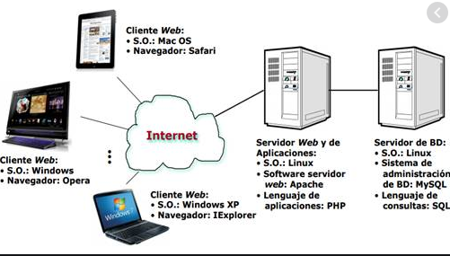
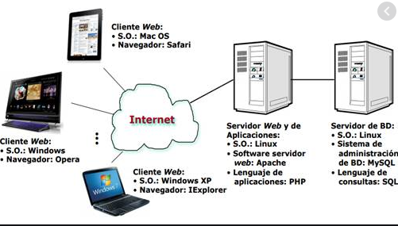

La arquitectura cliente-servidor es un modelo de diseño de software en el que las tareas se reparten entre los proveedores de recursos o servicios, llamados servidores, y los demandantes, llamados clientes. Un cliente realiza peticiones a otro programa, el servidor, quien le da respuesta. Esta idea también se puede aplicar a programas que se ejecutan sobre una sola computadora, aunque es más ventajosa en un sistema operativo multiusuario distribuido a través de una red de computadoras.
Algunos ejemplos de aplicaciones computacionales que usen el modelo cliente-servidor son el Correo electrónico, un Servidor de impresión y la World Wide Web.
En esta arquitectura la capacidad de proceso está repartida entre los clientes y los servidores, aunque son más importantes las ventajas de tipo organizativo debidas a la centralización de la gestión de la información y la separación de responsabilidades, lo que facilita y clarifica el diseño del sistema.
 
